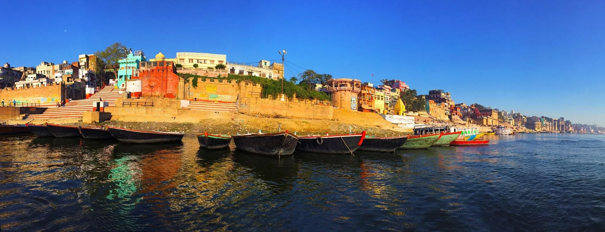
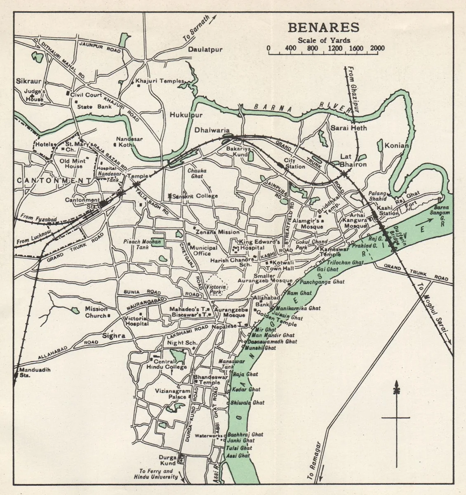
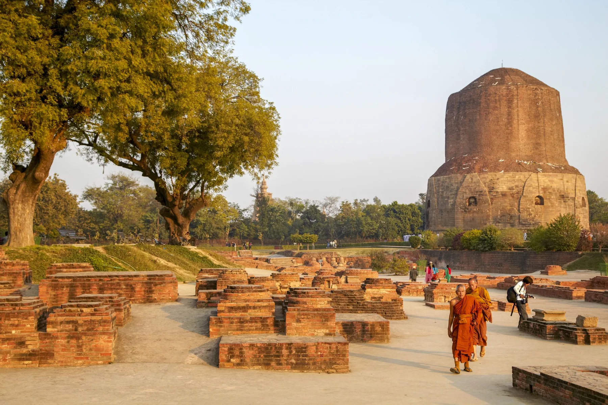
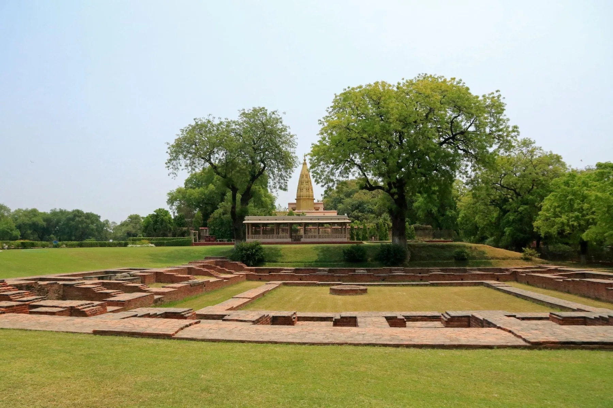
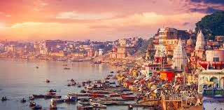
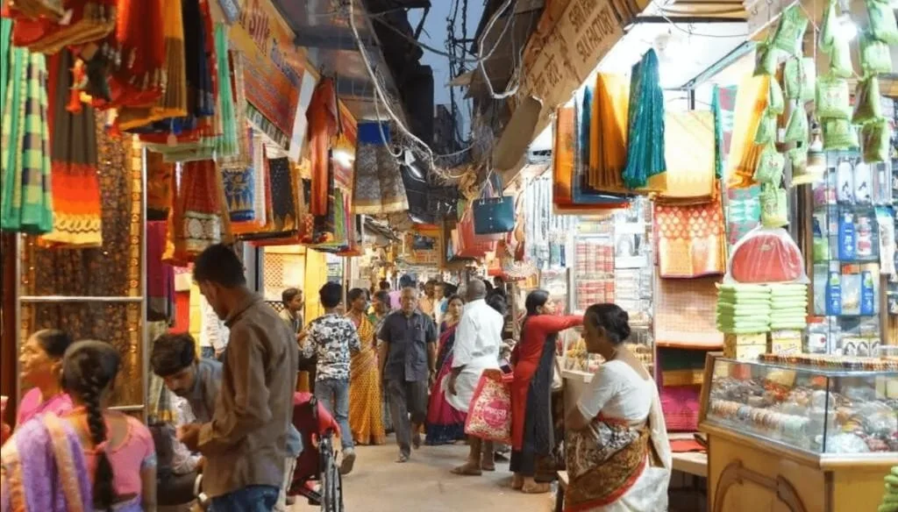
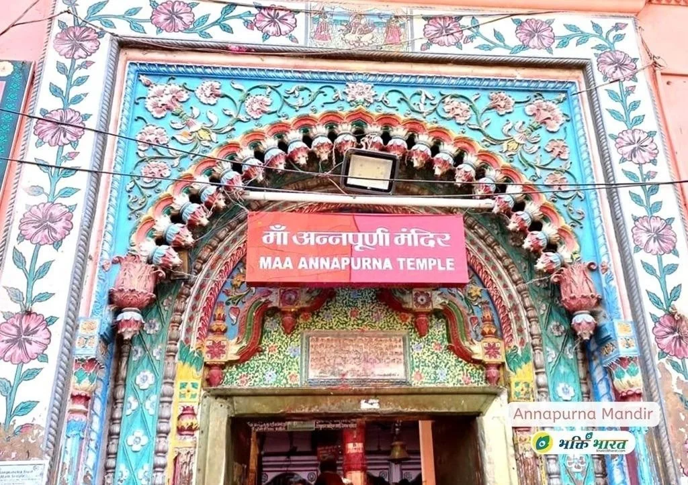
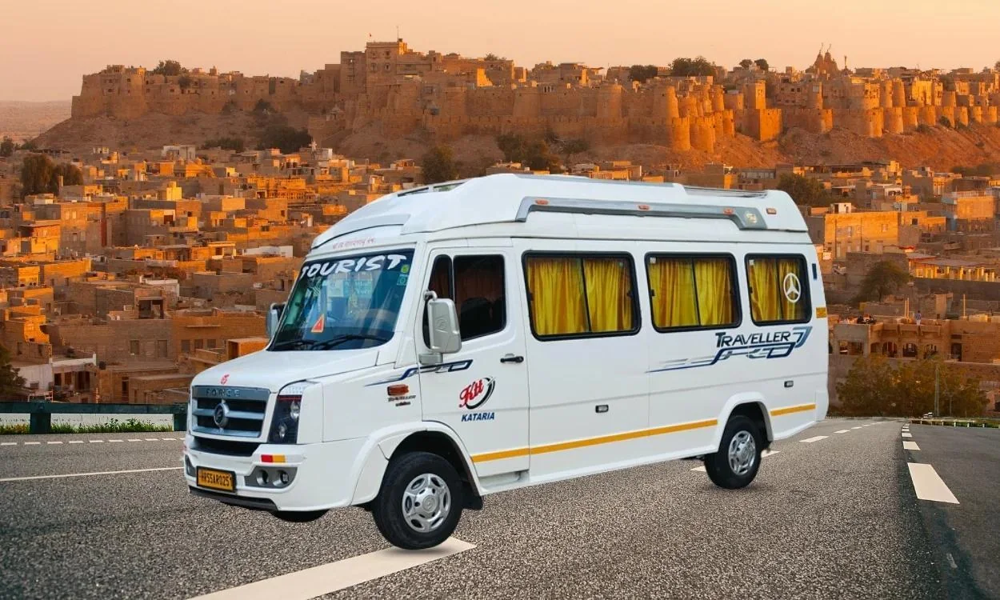

परिचय: काशी केवल शहर नहीं, एक अनुभव है
भारत में कुछ नगर ऐसे हैं जिन्हें लोग नक्शे से पहले स्मृति में पहचानते हैं। काशी उन्हीं नगरों में है। कोई इसे वाराणसी कहता है, कोई बनारस, और बहुत से श्रद्धालु अब भी प्रेम से काशी ही कहते हैं। नाम बदलते हैं, लेकिन भाव वही रहता है: गंगा किनारे बसा वह नगर जहां सुबह की नाव, मंदिर की घंटी, गलियों की आवाज, शास्त्र चर्चा और साधारण चाय की दुकान तक एक बड़ी सांस्कृतिक कहानी का हिस्सा बन जाती है।
यहां यात्री अक्सर पहले गंगा को देखते हैं। अस्सी से पंचगंगा तक चलते हुए लगता है कि घाट केवल पत्थर की सीढ़ियां नहीं, बल्कि समय की खुली किताब हैं। कोई स्नान कर रहा है, कोई पिंडदान, कोई संगीत अभ्यास, कोई मौन बैठा है। यही काशी का स्वभाव है: वह विद्वान, साधक, पर्यटक, परिवार और स्थानीय दुकानदार सबको अपनी लय में जगह देती है।

घाटों की छवि इसलिए जरूरी है क्योंकि काशी की यात्रा नदी से शुरू होकर फिर उसी नदी पर लौटती है। यहां सुबह, दोपहर और शाम तीनों समय अलग-अलग भाव देते हैं।
ऐतिहासिक पृष्ठभूमि: काशी, वाराणसी और बनारस
काशी को भारतीय सांस्कृतिक स्मृति में अत्यंत प्राचीन नगर माना जाता है। पुराने साहित्य, यात्रावृत्त, पौराणिक परंपराएं और स्थानीय कथाएं इसे ज्ञान, पूजा, कर्मकांड और व्यापार के केंद्र के रूप में याद करती हैं। वाराणसी नाम को सामान्य रूप से वरुणा और अस्सी से जोड़ा जाता है, जबकि बनारस नाम लोकभाषा, संगीत, कारीगरी और शहर के रोजमर्रा के जीवन में बहुत अपनापन रखता है।
इतिहासकार जब काशी को पढ़ते हैं तो वे केवल एक मंदिर या एक कालखंड पर नहीं रुकते। वे नदी मार्ग, बसाहट, शिल्प, तीर्थ-व्यवस्था, शिक्षा, व्यापार और बदलते राजनैतिक संरक्षण को साथ देखते हैं। इसी कारण काशी की पहचान परतों में खुलती है। यहां शैव, वैष्णव, शाक्त, बौद्ध, जैन, सूफी, संगीत और लोक परंपराएं अलग-अलग धागों की तरह मिलती हैं।

मानचित्र या पुरानी शहर-कल्पना यात्रा को गहराई देती है। इससे समझ आता है कि काशी की पहचान केवल वर्तमान सड़कों से नहीं, बल्कि पुराने मार्गों और स्मृति-स्थलों से भी बनी है।
पुरातात्विक दृष्टि: सारनाथ और शहरी निरंतरता
काशी की पुरातात्विक चर्चा में सारनाथ का स्थान बहुत महत्वपूर्ण है। वाराणसी से थोड़ी दूरी पर स्थित सारनाथ बौद्ध इतिहास, स्तूपों, मठों, शिलालेखों, मूर्तियों और संग्रहालय परंपरा के कारण विश्वभर के शोधकर्ताओं और यात्रियों को आकर्षित करता है। यहां की भूमि यह बताती है कि गंगा क्षेत्र में धर्म, शिक्षा और यात्राओं का आदान-प्रदान कितनी गहराई से जुड़ा रहा है।
वाराणसी के भीतर पुरातत्व को पढ़ना थोड़ा अलग काम है, क्योंकि यह लगातार आबाद शहर है। पुराने घाट कई बार बदले, बने और सुधरे; गलियां नई जरूरतों के अनुसार ढलीं; मंदिरों के आसपास व्यापार और आवास बढ़े। इसलिए काशी की भौतिक विरासत को संतुलित भाषा में समझना चाहिए। प्रमाण जहां स्पष्ट हों, वहां प्रमाण की बात करें; जहां लोकस्मृति हो, वहां उसे सम्मान के साथ लोककथा मानकर सुनें।

सारनाथ की छवि लेख में इसलिए है क्योंकि यह काशी को केवल घाटों और मंदिरों तक सीमित नहीं रहने देती। यह क्षेत्र की व्यापक आध्यात्मिक और शैक्षिक परंपरा दिखाती है।
मंदिर स्थापत्य: श्रद्धा, गलियां और शहर की रचना
श्री काशी विश्वनाथ मंदिर काशी की आध्यात्मिक धुरी है। मंदिर तक पहुंचने वाली गलियां, सुरक्षा व्यवस्था, प्रसाद की दुकानें, श्रद्धालुओं की कतार और फिर गर्भगृह की ओर बढ़ता हुआ क्षण, यात्रा को बहुत सघन बना देता है। मंदिर का आधुनिक परिसर साफ-सुथरे मार्ग और विशालता का अनुभव देता है, लेकिन उसके आसपास की पुरानी गली-संस्कृति भी यात्रा की आत्मा बनी रहती है।
अन्नपूर्णा मंदिर काशी के भोजन, दान और मातृ-भाव से जुड़ा है। संकट मोचन मंदिर भक्ति, संगीत और हनुमान उपासना का प्रिय स्थान है। दुर्गा कुंड मंदिर अपनी लाल आभा और शाक्त परंपरा के कारण अलग पहचान रखता है। तुलसी मानस मंदिर रामचरितमानस की स्मृति को लोकभाषा और भक्ति से जोड़ता है। भारत माता मंदिर धार्मिक मूर्ति की जगह भारत के मानचित्र को केंद्र में रखकर काशी की सांस्कृतिक व्यापकता दिखाता है।

विश्वनाथ मंदिर की छवि स्थापत्य अनुभाग में इसलिए है क्योंकि यहां भवन, मार्ग, श्रद्धालु और शहर की व्यवस्था एक साथ काम करते हैं। यह केवल दर्शन स्थल नहीं, काशी की धुरी है।
गंगा घाट और सांस्कृतिक दृश्य
दशाश्वमेध घाट पर शाम की गंगा आरती पहली बार आने वाले यात्रियों को तुरंत प्रभावित करती है। दीप, धूप, शंख, मंत्र और भीड़ का अनुशासन मिलकर सार्वजनिक पूजा का अद्भुत दृश्य बनाते हैं। अस्सी घाट सुबह की सैर, संगीत, चाय और युवा ऊर्जा के लिए प्रिय है। मणिकर्णिका और हरिश्चंद्र घाट जीवन-मृत्यु के गंभीर दर्शन से जुड़े हैं, इसलिए वहां सम्मान और संयम जरूरी है। पंचगंगा घाट काशी के पुराने आध्यात्मिक भूगोल में खास स्थान रखता है।
घाटों पर चलते हुए ध्यान रखें कि हर स्थान फोटो-पॉइंट नहीं होता। कुछ जगहें परिवारों के संस्कार, शोक और निजी पूजा से जुड़ी होती हैं। काशी अच्छी तरह तब खुलती है जब यात्री कैमरे से पहले आंखों और व्यवहार से जगह को समझता है।

गंगा आरती का दृश्य यात्रा के भाव को गहरा करता है। परिवारों के लिए यह काशी यात्रा का सबसे यादगार सार्वजनिक अनुभव बन सकता है।
कथा और स्थानीय विश्वास
काशी को महादेव की नगरी कहा जाता है। स्थानीय विश्वास है कि यहां शिव स्वयं अपने भक्तों को संभालते हैं और मृत्यु के बाद मोक्ष की राह सरल होती है। ऐसी कथाएं इतिहास की तारीखों की तरह नहीं पढ़ी जातीं; इन्हें उस भाव से सुनना चाहिए जिसमें पीढ़ियों ने शहर से प्रेम किया है। गंगा और शिव की कथाएं काशी में एक-दूसरे से अलग नहीं हैं। नदी शहर को धोती है, और शिव शहर को अर्थ देते हैं।
दशाश्वमेध घाट से जुड़ी कथा में यज्ञ, देवता और पवित्र कर्म की स्मृति आती है। नाविक, पंडा, दुकानदार और पुराने परिवार इन कथाओं को अपने ढंग से सुनाते हैं। अच्छा यात्री हर कथा को बहस में बदलने के बजाय उसके सांस्कृतिक महत्व को समझता है। यही संतुलन काशी को श्रद्धा और अध्ययन, दोनों के लिए सुंदर बनाता है।
यात्रा अनुभव: सुबह की नाव, गलियां और बनारसी स्वाद
काशी का सबसे अच्छा आरंभ सुबह की नाव से होता है। हल्की रोशनी में घाट एक-एक कर खुलते हैं। कहीं मंत्र सुनाई देता है, कहीं आरती की तैयारी, कहीं बच्चे पानी में खेलते हैं। नाव से लौटकर गलियों में चलें तो शहर का दूसरा चेहरा दिखता है: छोटे मंदिर, दूध की दुकाने, कचौड़ी-जलेबी, चाय, पान, लकड़ी की अलमारियां और अचानक खुलता कोई पुराना आंगन।
बनारसी भोजन यात्रा को घरेलू बनाता है। कचौड़ी-सब्जी, चाट, लस्सी, मलाईयो के मौसम की मिठास, पान और स्थानीय मिठाइयां यात्रा में स्वाद जोड़ते हैं। बाजारों में बनारसी सिल्क साड़ी की दुनिया अलग है। असली कारीगरी पहचानने के लिए जल्दी न करें; धागा, जरी, बुनाई और दुकानदार की जानकारी सुनें।

गलियों की तस्वीर इसलिए रखी गई है क्योंकि काशी का आधा अनुभव घाटों पर और आधा इन गलियों में मिलता है। यहीं शहर की आवाज सबसे साफ सुनाई देती है।

स्थानीय संस्कृति की छवि यात्रियों को याद दिलाती है कि काशी केवल दर्शन नहीं, बल्कि रहने-बोलने-खाने और बनाने की परंपरा भी है।
तीर्थ-यात्री गाइड: परिवार के साथ व्यावहारिक योजना
सबसे अच्छा समय
अक्टूबर से मार्च परिवारों और वरिष्ठ नागरिकों के लिए सबसे आरामदायक समय है। सावन, देव दीपावली, महाशिवरात्रि और बड़े पर्व बहुत सुंदर होते हैं, लेकिन भीड़ और होटल दरें बढ़ सकती हैं। गर्मी में सुबह और शाम पर यात्रा केंद्रित रखें।
एक दिन और दो दिन की योजना
एक दिन में सुबह नाव, विश्वनाथ दर्शन, अन्नपूर्णा मंदिर, दोपहर विश्राम और शाम दशाश्वमेध आरती रखी जा सकती है। दो दिन हों तो दूसरे दिन सारनाथ, संकट मोचन, दुर्गा कुंड, तुलसी मानस, भारत माता मंदिर, बाजार और सिल्क खरीदारी जोड़ें।
अयोध्या से काशी मार्ग और कैब
अयोध्या से काशी निजी कैब द्वारा सुविधाजनक आध्यात्मिक मार्ग है। परिवार, बुजुर्ग और बच्चों के साथ यात्रा में कैब बेहतर रहती है क्योंकि रुकने, भोजन और सामान का नियंत्रण आपके पास रहता है। होटल घाटों के पास चाहिए या शांत क्षेत्र में, यह अपनी प्राथमिकता के अनुसार चुनें। कई परिवार अयोध्या-काशी-प्रयागराज पैकेज में तीनों शहर जोड़ते हैं।

CTA चित्र यात्रा की व्यावहारिक जरूरत दिखाता है। काशी, अयोध्या और प्रयागराज जैसे मार्गों में सही वाहन योजना यात्रा की थकान कम करती है।
Did You Know: काशी के 10 छोटे तथ्य
- काशी को भारतीय परंपरा में महादेव की नगरी कहा जाता है।
- वाराणसी नाम को वरुणा और अस्सी से जोड़ा जाता है।
- बनारस नाम संगीत, भोजन, बोली और कारीगरी में बहुत लोकप्रिय है।
- सारनाथ वाराणसी के पास प्रमुख बौद्ध पुरातात्विक स्थल है।
- दशाश्वमेध घाट गंगा आरती के लिए सबसे प्रसिद्ध है।
- अस्सी घाट सुबह की गतिविधियों और युवा यात्रियों में लोकप्रिय है।
- मणिकर्णिका और हरिश्चंद्र घाटों पर विशेष सम्मान और संयम जरूरी है।
- बनारसी सिल्क साड़ी शहर की बड़ी शिल्प पहचान है।
- काशी की यात्रा में पैदल चलना लगभग अनिवार्य अनुभव है।
- अयोध्या, काशी और प्रयागराज एक स्वाभाविक आध्यात्मिक सर्किट बनाते हैं।
FAQ: काशी इतिहास, दर्शन और यात्रा
काशी को वाराणसी क्यों कहा जाता है?
वाराणसी नाम को सामान्य रूप से वरुणा और अस्सी से जोड़ा जाता है। काशी पवित्र पुराना नाम है और बनारस लोकजीवन का प्रिय नाम है।
काशी का ऐतिहासिक महत्व क्या है?
काशी पूजा, ज्ञान, कर्मकांड, शिल्प, व्यापार और गंगा-आधारित शहरी जीवन का पुराना केंद्र रही है।
सारनाथ का पुरातात्विक महत्व क्या है?
सारनाथ में स्तूप, मठ अवशेष, मूर्तियां और संग्रहालय सामग्री मिलती है, जो बौद्ध इतिहास और गंगा क्षेत्र की शिक्षा परंपरा को समझने में मदद करती है।
क्या काशी के लिए 2 दिन काफी हैं?
ठीक योजना हो तो दो दिन में विश्वनाथ दर्शन, गंगा आरती, सुबह नाव, सारनाथ और मुख्य मंदिर देखे जा सकते हैं।
वाराणसी में कौन से घाट देखने चाहिए?
दशाश्वमेध, अस्सी, पंचगंगा, मणिकर्णिका और हरिश्चंद्र घाट प्रमुख हैं। संवेदनशील घाटों पर फोटो और व्यवहार में संयम रखें।
क्या अयोध्या से काशी कैब से जा सकते हैं?
हां, निजी कैब परिवारों और वरिष्ठ नागरिकों के लिए सुविधाजनक रहती है। रास्ते में भोजन और विश्राम अपनी जरूरत के अनुसार रख सकते हैं।
गंगा आरती का सबसे अच्छा समय क्या है?
शाम की आरती के लिए सूर्यास्त से पहले पहुंचना बेहतर है। त्योहारों में और जल्दी पहुंचें क्योंकि भीड़ अधिक होती है।
क्या अयोध्या, काशी और प्रयागराज एक यात्रा में जोड़े जा सकते हैं?
हां, यह उत्तर प्रदेश का लोकप्रिय आध्यात्मिक सर्किट है। 4 से 6 दिन की योजना सबसे आरामदायक रहती है।
काशी का सबसे प्रसिद्ध मंदिर कौन सा है?
श्री काशी विश्वनाथ मंदिर सबसे प्रसिद्ध है और अधिकतर यात्रियों की काशी यात्रा का केंद्र होता है।
क्या काशी परिवार तीर्थयात्रा के लिए ठीक है?
हां, लेकिन होटल, वाहन, चलने की दूरी और दर्शन समय पहले से तय करें, खासकर बुजुर्गों और बच्चों के साथ।
अयोध्या-काशी-प्रयागराज यात्रा प्लान करें
अपनी यात्रा तारीख, पिकअप शहर, यात्रियों की संख्या और होटल पसंद बताइए। हमारी स्थानीय टीम आपके परिवार के लिए शांत, व्यावहारिक और दर्शन-केंद्रित योजना सुझाएगी।